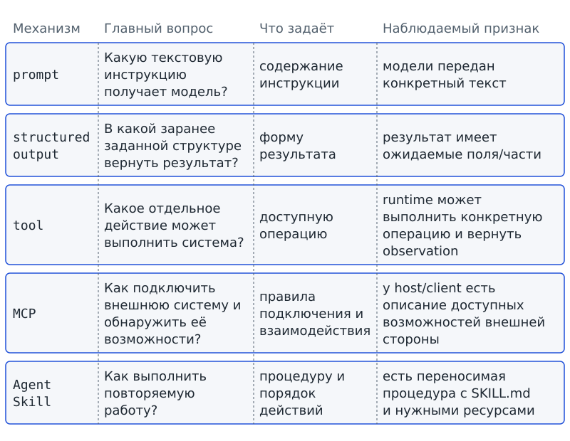
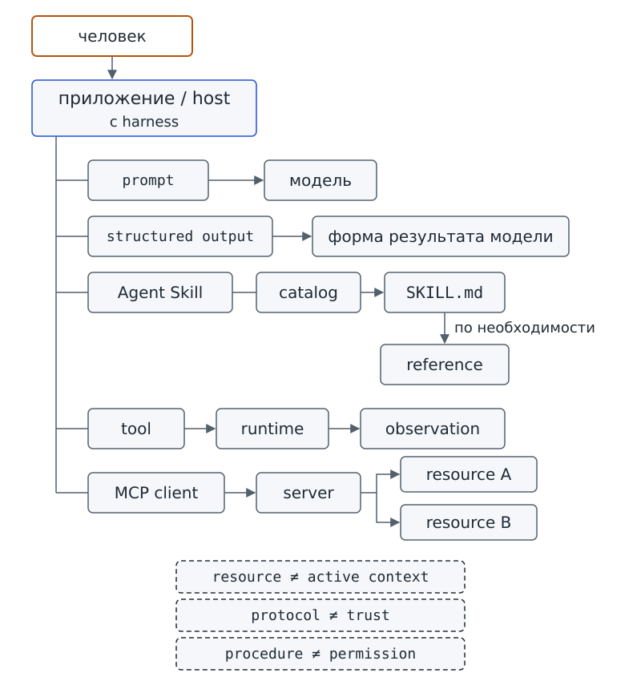

Глава 4. Prompt, structured output, tool, MCP и Agent Skill: какие задачи решают разные уровни системы?¶
С чего всё началось¶
До Фестиваля науки осталось меньше двух недель. На доске проектного бюро уже десятки мелких дел вместо прежних трёх: лабораторной группе нужен список оборудования, дизайнеры ждут подтверждения размеров стенда, редакционная группа собирает короткую сводку для учителей. Аня открыла чат с «Дежурным» и одну за другой написала пять просьб.
Первая просьба звучала так: «Объясни, почему задача заблокирована, в двух предложениях». Во второй Аня уже потребовала определённую форму ответа: «Верни поля summary, blocked_tasks, next_step». Третья просьба была другой: «Прочитай карточки задач». Четвёртая звучала так: «Подключись к школьной доске и покажи доступные материалы». Пятая была короткой по словам, но задавала целый порядок работы: «Каждую неделю готовь сводку одним и тем же проверяемым способом».
Марк прочитал эти пять строк и пожал плечами:
— Зачем нам столько новых слов? Это всё просто разные промпты. Написали текст — получили ответ.
Аня не стала спорить. Она только обвела пять просьб и спросила тебя: в каких случаях действительно достаточно изменить текст, а в каких одного текста уже мало?
Догадку Марка понять можно: раз все пять просьб записаны текстом, легко решить, будто различается только формулировка. Но запись просьбы и механизм её выполнения — разные вещи. Фраза «прочитай карточки» сама не открывает файл; фраза «подключись к доске» сама не создаёт подключение; фраза «делай так каждую неделю» сама не превращается в переносимую процедуру. Поэтому сначала нужно развести роли механизмов, а уже потом сравнивать ответы.
Вопрос-Прогноз. Какие из пяти просьб можно выполнить только изменением текста, а для каких нужен другой механизм — и по какому наблюдаемому признаку это определить? Запиши свой прогноз. К нему мы вернёмся после обеих практик.
Главный вопрос главы. Какие задачи решают prompt, structured output, tool, MCP и Agent Skill, и как соединить их в одной системе, не объявляя один механизм заменой остальных?
Фигура 9. Пять просьб Ани
После главы ты сможешь¶
- классифицировать примеры как
prompt,structured output,tool,MCPилиAgent Skillи объяснять свой выбор; - формулировать главный вопрос каждого из пяти механизмов;
- объяснять, почему инструкция или форма ответа не доказывают внешнего действия;
- различать отдельную операцию, подключение внешних возможностей и повторяемую процедуру;
- изображать роли
host,client,serverиresourceв учебной MCP-схеме; - объяснять progressive disclosure на последовательности «каталог →
SKILL.md→ нужный reference»; - строить одну архитектурную карту, в которой пять механизмов работают рядом, а не заменяют друг друга.
Урок 7. Почему пять похожих слов обозначают разные механизмы¶
1. Сначала вернёмся к знакомой машине¶
В главе 3 мы разобрали harness — программную среду вокруг модели. В ней уже были интерфейс, выбор, оркестрация, runtime, состояние, активный контекст и permissions. Заново определять эти части не нужно. Теперь нас интересует другой вопрос: какие разные вещи могут проходить через эту среду и какую работу каждая из них задаёт?
Начнём с уже знакомой карты. Выполни команду из корня starter — той самой папки учебного комплекта, с которой мы работаем с первой главы. Перед запуском сделай прогноз: появятся ли в выводе слова prompt, MCP и Agent Skill, если starter главы 3 ещё не различал эти механизмы?
# запуск из корня starter
python harness_demo.py --show-parts
интерфейс: show_loop, main
выбор: planner_stub
оркестрация: run_harness
решение_после_observation: decide
runtime: perform_action
состояние: new_state, update_state
активный_контекст: state -> planner_stub
permissions: access_demo.check_workspace_access (отдельное демо главы 3)
В выводе перечислены знакомые обязанности harness. Пяти механизмов этой главы там нет, потому что эта карта отвечает на другой вопрос: кто организует работу вокруг модели? Следующая карта будет устроена иначе: она покажет способы задать инструкцию, форму результата, действие, подключение и повторяемую процедуру.
Отсюда следует граница: harness не становится шестым пунктом в нашей пятёрке и не исчезает после появления MCP или Agent Skill. Harness остаётся средой, которая организует работу, а пять механизмов отвечают на пять других вопросов.
2. Prompt: что именно сказано модели¶
Вернёмся к первой просьбе Ани: «Объясни, почему задача заблокирована, в двух предложениях». Здесь Аня прежде всего задаёт модели текстовую инструкцию: что объяснить и насколько кратко ответить.
Prompt / инструкция — текстовая инструкция, передаваемая модели.
Prompt сообщает модели, что от неё хотят в текущем обращении. Он может быть коротким — «сделай сводку» — или более подробным: «сравни две карточки, не придумывай отсутствующие данные и ответь тремя предложениями». В обоих случаях речь идёт именно о тексте инструкции.
Что из этого определения не следует? Prompt не выполняет внешнюю операцию, не подключает сервер и не превращается автоматически в Agent Skill. Если в prompt написать «открой файл», слова не создадут у приложения функцию чтения и не докажут, что файл был открыт. Здесь действует уже знакомая граница: текст о действии и выполненное действие — разные вещи.
Prompt также не равен всему контексту. Контекст — вся информация, доступная модели в конкретном обращении. Prompt может входить в контекст, но рядом с ним могут быть карточки задач, предыдущие сообщения или другие данные, которые harness решил передать модели.
Проверь себя на ходу. В контексте лежат текст инструкции и три карточки задач. Что здесь относится к prompt, а что — к остальному контексту?
3. Structured output: в какой форме должен прийти результат¶
Теперь вторая просьба Ани: «Верни поля summary, blocked_tasks, next_step». Здесь важно уже не только содержание ответа. Ане нужно, чтобы результат был разложен по заранее известным именованным частям. Тогда приложение сможет не угадывать, где в свободном тексте находится сводка, список заблокированных задач и следующий шаг.
Structured output / структурированный вывод — требование вернуть результат в заранее определённой машинно-читаемой структуре.
Structured output задаёт форму, в которой должен прийти результат. Например, заранее договорились, что в ответе будут три поля — summary, blocked_tasks и next_step, — и у каждого своё назначение. Тогда программа может обращаться к нужному полю по имени, а не искать его в свободном абзаце. Заранее задана именно форма результата, а не способ получить сами данные.
Это не внешнее действие. Structured output не читает карточки, не сохраняет файл и не создаёт подключение. Он также не равен любому тексту, похожему на JSON. В этой главе нам достаточно идеи заранее заданной структуры; формальные схемы данных появятся позже.
Сравни две просьбы:
Объясни причину блокировки в двух предложениях.
Верни поля summary, blocked_tasks, next_step.
Первая просьба прежде всего задаёт содержание и стиль ответа. Вторая задаёт форму результата. Они могут встретиться в одном обращении — например, «объясни кратко и верни три поля», — но от этого не становятся одним механизмом.
4. Tool: какое отдельное действие доступно системе¶
Третья просьба Ани — «Прочитай карточки задач». Такую фразу тоже можно поместить в prompt. Но здесь появляется новый вопрос: есть ли у системы операция, которая действительно умеет читать карточки? Одного текста для ответа на этот вопрос уже недостаточно.
Tool мы уже встречали в главах 1–3, поэтому определение не меняем, а уточняем его место среди соседних механизмов.
Tool / инструмент — конкретная операция, доступная агентной системе.
Главный вопрос tool: «Какое отдельное действие может выполнить система?» Для нашего проекта пример — read_task_cards. Пока операция только перечислена среди доступных, ничего не произошло. Фактическое выполнение остаётся работой runtime, а полученный результат возвращается как observation.
Не каждая функция Python автоматически становится tool. В программе могут быть десятки вспомогательных функций, а агентной системе доступны как операции только некоторые из них. Верно и обратное: слово в prompt не превращается в tool. Можно написать «измерь температуру», но без подходящей операции система не получит новое измерение из внешней среды.
Здесь удобно провести короткую границу:
prompt: что сказали модели
tool: что система умеет отдельно выполнить
runtime: где операция фактически исполняется
observation: что вернулось после выполнения
Эта цепочка пригодится позже, когда мы подробно разберём запрос операции. Пока достаточно различать роли в ней.
5. Пять нейтральных фрагментов¶
Теперь проверим, удаётся ли различить механизмы без готовых подписей. В starter для главы 4 есть локальная демонстрация mechanisms_demo.py. Она не обращается к сети и не использует живую модель: это детерминированный учебный материал, и каждый её вывод, напечатанный в этой главе, получен фактическим запуском.
Сначала попросим программу показать пять фрагментов A–E. До запуска попробуй для каждого мысленно ответить: это инструкция, форма результата, операция, подключение или процедура?
# запуск из корня starter
python mechanisms_demo.py fragments
A
Объясни, почему задача заблокирована, в двух предложениях.
B
{
"summary": "Стенд готов наполовину, часть задач остановлена.",
"blocked_tasks": ["task-003"],
"next_step": "Уточнить размеры стенда у дизайнеров."
}
C
read_task_cards()
Прочитать карточки задач проекта.
D
local_school_board
tasks://open
tasks://blocked
E
status-summary
read cards
select blocked
compose summary
У пяти фрагментов намеренно нет подписей. Смотри не на знакомые слова, а на форму: перед тобой фраза, набор именованных полей, имя операции, описание подключённой стороны или порядок шагов? Запиши гипотезу для каждой буквы. Проверка будет в §10; до неё не заглядывай в готовый ответ.
6. MCP: не действие, а способ подключения¶
Четвёртая просьба Ани — «Подключись к школьной доске и покажи доступные материалы». Здесь Аня не называет одно конкретное действие. Сначала системе нужен способ взаимодействовать с внешней стороной и узнать, какие возможности эта сторона предоставляет.
На экскурсии ты видел в работе и подключённый сервис, и записанную процедуру; здесь оба механизма получат точные определения и место среди остальных.
MCP / Model Context Protocol — протокол подключения ИИ-приложения к внешним системам, данным и возможностям через стандартизированное взаимодействие.
Главный вопрос MCP: «Как подключить внешнюю систему и обнаружить её возможности?» Tool отвечает на другой вопрос: какая отдельная операция доступна системе. Через MCP-подключение могут быть обнаружены разные возможности и материалы, поэтому MCP нельзя сводить к одному tool.
Слово «протокол» здесь означает согласованные правила взаимодействия сторон. Это можно сравнить с правилами обмена посылками: правила объясняют, как оформить и передать отправление, но не доказывают, что его содержимое безопасно или полезно. На этом сходство заканчивается: MCP — программный протокол, а не почтовая служба; конкретные сообщения и роли задаются спецификацией и реализацией.
В нашей главе мы не запускаем настоящий внешний MCP-сервер и не настраиваем сеть. Нам нужно только правильно увидеть архитектурные роли и не спутать протокол с отдельной операцией.
7. Agent Skill: как повторить работу тем же способом¶
Пятая просьба Ани звучит так: «Каждую неделю готовь сводку одним и тем же проверяемым способом». Один tool не задаёт весь такой порядок работы. Чтение карточек — только один шаг; кроме него, нужно выбрать заблокированные задачи, собрать сводку, проверить форму результата и знать, когда работа закончена.
Agent Skill — переносимая процедура в каталоге, центральным обязательным файлом которой является SKILL.md; дополнительные ресурсы используются по необходимости.
Главный вопрос Agent Skill: «Как выполнить повторяемую работу?» В нашем примере процедура может задать последовательность: прочитать карточки, выбрать заблокированные, подготовить сводку по установленным правилам. Для отдельных шагов она может использовать tools, но вся процедура не равна одному tool.
Не смешивай Agent Skill с длинным prompt. Prompt передаёт инструкцию модели в конкретном обращении. Agent Skill оформляет переносимую процедуру, которую можно снова использовать в подходящей задаче. И не называй Agent Skill «памятью агента вообще»: позже мы отдельно разберём состояние и другие способы хранения данных.
В этой главе мы только знакомимся с устройством Agent Skill концептуально. Мы увидим SKILL.md как центральный файл процедуры, но не будем писать его синтаксис, метаданные или собирать собственный каталог. Практическая сборка будет позже.
8. Центральный артефакт: матрица пяти механизмов¶
Теперь соберём различия в одну таблицу. Она нужна как карта: если два термина начинают казаться одинаковыми, сравни их главный вопрос, то, что они задают, и наблюдаемый признак.
| Механизм | Главный вопрос | Что задаёт | Наблюдаемый признак | С чем не смешивать |
|---|---|---|---|---|
prompt |
Какую текстовую инструкцию получает модель? | содержание инструкции | модели передан конкретный текст | контекстом целиком, tool, Agent Skill |
structured output |
В какой заранее заданной структуре вернуть результат? | форму результата | результат имеет ожидаемые поля/части | внешним действием |
tool |
Какое отдельное действие может выполнить система? | доступную операцию | runtime может выполнить конкретную операцию и вернуть observation | prompt, MCP, Agent Skill |
MCP |
Как подключить внешнюю систему и обнаружить её возможности? | правила подключения и взаимодействия | у host/client есть описание доступных возможностей внешней стороны | одним tool, знаком доверия |
Agent Skill |
Как выполнить повторяемую работу? | процедуру и порядок действий | есть переносимая процедура с SKILL.md и нужными ресурсами |
длинным prompt, tool, MCP, памятью вообще |
Строки таблицы расположены рядом, а не ступенями. Поэтому нельзя читать её как лестницу «сначала tool, потом современнее MCP, потом ещё современнее Agent Skill». В одном проекте могут одновременно работать prompt, structured output, несколько tools, MCP-подключение и Agent Skill: каждый механизм отвечает на свой вопрос.

Фигура 10. Матрица пяти механизмов
9. Практика A: десять карточек ситуаций¶
Работайте парами. Учитель или соседняя пара выдаёт десять карточек с короткими ситуациями. На каждой нужно написать один основной механизм и одну фразу объяснения: какой главный вопрос здесь решается?
Примеры ситуаций:
- «Ответь не длиннее трёх предложений».
- «Верни поля
title,status,reason». - «Прочитай локальную карточку задачи».
- «Покажи, какие материалы предоставляет подключённая школьная система».
- «Каждый понедельник собирай статус-отчёт по одной и той же процедуре».
- «Не используй разговорный стиль».
- «Получив карточку, проверь её обязательные поля» — если речь об отдельной доступной операции.
- «Подключённая сторона сообщает два доступных материала».
- «Сводка всегда состоит из трёх именованных частей».
- «Процедура говорит: прочитать карточки → выбрать blocked → составить сводку».
Здесь нужно назвать роль механизма, а не вспомнить английское слово. Если в ситуации встречаются два механизма, выбери тот, о котором спрашивает карточка, и отдельно поясни соседний. Например, Agent Skill может использовать tool; из этого не следует, что вся процедура становится tool.
Результат практики A: заполненная матрица десяти ситуаций и минимум два объяснённых пограничных случая.
10. Практика B: классификация своими пятью строками¶
В треке B ты не меняешь рабочие данные проекта. Если папки drafts/ нет — создай её. Создай в рабочей копии starter обычный текстовый файл workspace/drafts/ch04_choices.txt и запиши пять строк:
A=prompt
B=structured output
C=tool
D=MCP
E=Agent Skill
Заполненный файл в рабочей папке workspace/ не поставляется: эти пять строк ты создаёшь сам. Перед проверкой снова посмотри на A–E из раздела 5. Сверяй не ключевые слова, а форму каждого фрагмента: фраза, именованные поля, имя операции, описание подключённой стороны или порядок шагов. До запуска запиши прогноз: сколько ответов программа примет?
Если запустить проверку до того, как файл создан, программа не падает, а честно сообщает, чего не хватает. В чистом комплекте такой первый запуск даёт:
ошибка: файл ответов не создан: workspace/drafts/ch04_choices.txt
подсказка: скопируй workspace/ch04/templates/choices.txt и заполни пять строк
результат: не принят
Теперь выполни команду. Вторая служебная строка блока, # фикстура: …, относится к проверке самой книги, а не к твоему действию. Фикстура — заранее подготовленный файл для проверки: печатный вывод ниже получен на таком файле, который на время проверки подставляется на место твоего и затем убирается. В своём запуске ты вводишь только строку с python.
# запуск из корня starter
# фикстура: tests/fixtures/ch04/choices_correct.txt -> workspace/drafts/ch04_choices.txt
python mechanisms_demo.py check workspace/drafts/ch04_choices.txt
A: prompt — ok
B: structured output — ok
C: tool — ok
D: MCP — ok
E: Agent Skill — ok
результат: 5/5
Этот результат проверяет только классификацию пяти подготовленных учебных фрагментов. Он не доказывает, что ты распознаешь любые реальные системы, и не проверяет работу живой модели.
Теперь специально неверный случай. Здесь все пять фрагментов названы prompt:
# запуск из корня starter
python mechanisms_demo.py check workspace/ch04/cases/choices_all_prompt.txt
A: prompt — ok
B: prompt — expected structured output
C: prompt — expected tool
D: prompt — expected MCP
E: prompt — expected Agent Skill
результат: 1/5
Правильным остаётся только A. Значит, в этих пяти подготовленных фрагментах догадка Марка «всё просто разные промпты» не проходит проверку. Текст может содержать просьбу о действии, подключении или процедуре, но сама просьба не превращается в эти механизмы.
Проверим неполный вход:
# запуск из корня starter
python mechanisms_demo.py check workspace/ch04/cases/choices_missing.txt
ошибка: отсутствует ответ E
результат: не принят
Здесь важен не балл, а статус: классификация неполна, и программа прямо сообщает, что результат не принят.
Последний случай урока разводит четыре особенно похожие роли:
# запуск из корня starter
python mechanisms_demo.py check workspace/ch04/cases/choices_boundary.txt
read-one-card: tool — ok
discover-resources: MCP — ok
repeat-summary: Agent Skill — ok
return-fields: structured output — ok
результат: 4/4
Четыре строки разводят четыре роли: чтение одной карточки относится к отдельной операции, обнаружение доступных материалов — к подключению, повторяемая сводка — к процедуре, а поля результата — к форме вывода. Эти механизмы могут работать в одном проекте одновременно.
Результат практики B: твой файл из пяти строк, прогноз до запуска и сверка четырёх сценариев: «должен», «не должен», «ошибка», «граница».
11. Мини-проверка урока 7¶
- Аня меняет «ответь подробно» на «ответь двумя предложениями». Какой механизм изменился?
- Программа должна вернуть три заранее названных поля. Это действие или форма результата?
- В приложении есть функция, но она не предоставлена агентной системе как операция. Можно ли автоматически назвать её tool?
- Почему фраза «подключись к доске» не доказывает наличие MCP-подключения?
- Чем tool отличается от Agent Skill?
Ответы¶
prompt.structured output; это форма результата, не внешнее действие.- Нет. Tool — конкретная операция, доступная агентной системе.
- Потому что текстовая просьба сама не создаёт программное подключение.
- Tool — отдельная операция; Agent Skill — повторяемая процедура, которая может включать несколько шагов и использовать tools.
Выходной билет урока 7¶
Запиши пять строк по шаблону:
prompt отвечает на вопрос …
structured output отвечает на вопрос …
tool отвечает на вопрос …
MCP отвечает на вопрос …
Agent Skill отвечает на вопрос …
Если хотя бы в двух строках у тебя получился один и тот же вопрос, вернись к матрице пяти механизмов и найди, где смешались роли.
Урок 8. Как механизмы работают вместе¶
1. Ложная лестница¶
На доске Марк нарисовал стрелку:
tool → MCP → Agent Skill
— Вот, — сказал он, — сначала были tools, потом их заменил MCP, а теперь всё заменят Agent Skills.
По рисунку легко решить, будто перед нами три поколения одного механизма. Но роли у них разные: tool отвечает за отдельную операцию, MCP — за подключение внешней системы и обнаружение возможностей, Agent Skill — за повторяемую процедуру. Порядок знакомства с терминами не превращает один механизм в «следующую версию» другого.
Поэтому полезнее рисовать одну систему с несколькими линиями. В ней Agent Skill задаёт, как выполнять работу; один из его шагов может использовать tool; tool может быть доступен через подключение; structured output может задавать форму итогового результата; prompt может содержать инструкцию для текущего обращения. Harness организует эти части вокруг модели.
2. Host, client, server и resource¶
Чтобы слово MCP не означало расплывчатое «подключение вообще», различим четыре роли учебной схемы.
Host — приложение или среда, внутри которой организуется работа MCP-подключений. В нашем учебном примере эту роль играет приложение школьного агента. Host — не новое название любого приложения: это конкретная роль приложения в MCP-архитектуре.
Client — компонент на стороне host, который взаимодействует с конкретным MCP-сервером. Host организует работу MCP-подключений, а client взаимодействует с конкретной выбранной внешней стороной.
Server — внешняя сторона MCP-подключения, предоставляющая доступные возможности. Слово «внешняя» здесь обозначает сторону подключения относительно host; в нашей учебной демонстрации всё остаётся локальным и сетевой сервер не запускается.
Resource / ресурс — доступный через интеграционный слой материал или источник данных. Интеграционный слой здесь — само подключение, через которое host получает доступ к внешней стороне. Например, сервер может объявить материалы tasks://open и tasks://blocked. Сам факт объявления ресурса ещё не означает, что его содержимое прочитано или передано модели.
Расположим четыре роли на одной схеме:
host
└── client
└── server
├── resource: tasks://open
└── resource: tasks://blocked
Схема показывает отношения ролей, но ничего не доказывает о доверии. Протокол описывает взаимодействие сторон; безопасность конкретного server проверяется отдельно.
Проверь себя на ходу. В списке виден
resource: tasks://blocked. Можно ли уже утверждать, что содержимое этого resource находится в активном контексте модели? Почему?
3. Обнаружить — не значит прочитать — не значит передать модели¶
Здесь особенно важно не склеить три события. Сначала система может обнаружить, что resource существует. Затем приложение может отдельно запросить его содержимое. После этого harness может решить, передавать ли полученные данные модели в конкретном обращении.
Три события нельзя сжимать в одно:
resource обнаружен
≠ resource прочитан
≠ содержимое передано модели
В главах 1 и 3 была похожая граница с файлами: наличие файла рядом с программой не означает, что модель видит его содержимое. MCP эту границу не отменяет. Он добавляет стандартный способ взаимодействия, а управление контекстом остаётся отдельной обязанностью среды.
Это пример общего инженерного правила: название возможности не доказывает выполненное действие. Поэтому в учебнике мы постоянно ищем наблюдаемый признак: что именно программа сделала и что вернулось.
4. Практика B: локальная MCP-карта без сети¶
Теперь попросим mechanisms_demo.py показать локальную mock-карту MCP. Слово mock здесь означает подготовленную учебную модель объекта: она нужна для разбора структуры, а не выдаётся за настоящий внешний сервер.
Перед запуском предскажи две последние строки. Должна ли локальная демонстрация утверждать, что сеть использовалась? Должна ли она объявлять сервер доверенным?
# запуск из корня starter
python mechanisms_demo.py mcp
host: school_agent_app
client: school_board_client
server: local_school_board
resource: tasks://open
resource: tasks://blocked
network: not used
trust: not proven
Первые пять строк показывают роли и объявленные resources. Две последние задают границы вывода: сеть не использовалась, доверие не доказано. Эти строки печатает сама программа, а не карточка server. Карточка содержит данные, а данные не могут назначить себе доверие. Поэтому по выводу можно утверждать только то, что показывает демонстрация, и не больше.
В этой главе мы не настраиваем настоящий транспорт, авторизацию или внешний сервер. Нам нужен только архитектурный смысл: MCP — не tool и не знак безопасности.
5. Progressive disclosure: открывать подробности по необходимости¶
Вернёмся к пятой просьбе Ани — повторяемой сводке. Представь, что для одной процедуры есть короткая карточка каталога, основной файл с порядком работы и отдельный подробный справочник полей отчёта. Если каждый раз загружать все три слоя сразу, в активный контекст попадут и те подробности, которые для текущего шага могут не понадобиться.
Поэтому используется progressive disclosure / постепенное раскрытие — подробности процедуры загружаются по мере необходимости, а не все одновременно.
В нашей учебной последовательности это выглядит так:
краткое описание → SKILL.md → нужный reference (справочный материал)
Сначала достаточно узнать, что процедура существует и для чего она предназначена. Если процедура подходит задаче, читается основной файл SKILL.md. Если конкретному шагу нужна подробность, загружается соответствующий reference.
Это можно сравнить с вложенными конвертами. На внешнем написано, что внутри; второй открывают, если нужны шаги; третий — если нужна подробная справка. Граница сходства здесь существенна: реальные файлы не получают защиту от того, что лежат «глубже». Progressive disclosure управляет объёмом загружаемых подробностей, но не работает как sandbox и не создаёт permissions.
Проверь себя на ходу. Каталог назвал skill
status-summary. Что ещё не загружено — и чего это не доказывает?
6. Практика A: три вложенных конверта¶
Для трека A подготовьте три бумажных конверта или три сложенных листа.
На внешнем напишите:
status-summary
подготовить сводку по карточкам проекта
Внутри второго — последовательность:
read cards
select blocked
compose summary
В третьем — поля отчёта:
summary
blocked_tasks
next_step
Работайте парами. Первый ученик получает только внешний слой и должен решить, подходит ли процедура к задаче «подготовить статус-сводку». Только после этого он открывает второй слой. Третий открывается лишь тогда, когда для шага compose summary понадобилась точная форма результата.
После опыта ответьте: что изменилось бы, если сразу выдать все три слоя? Сама процедура осталась бы прежней, но в активном контексте оказалось бы больше деталей, часть которых на этом шаге не нужна.
Результат практики A: схема трёх уровней и одна фраза-граница: «progressive disclosure управляет загрузкой подробностей, но не доказывает безопасность и не назначает права».
7. Практика B: три слоя Agent Skill¶
В starter три команды читают по одному учебному слою. Они не исполняют scripts и не устанавливают Agent Skill в сторонний продукт. Их задача — сделать progressive disclosure наблюдаемым.
Сначала слой каталога:
# запуск из корня starter
python mechanisms_demo.py skill --layer catalog
progressive disclosure: catalog
Agent Skill: status-summary
description: подготовить сводку по карточкам проекта
next: SKILL.md
Краткого описания хватает, чтобы определить назначение процедуры. Полные шаги на этом слое ещё не прочитаны.
Теперь основной файл:
# запуск из корня starter
python mechanisms_demo.py skill --layer instructions
progressive disclosure: SKILL.md
step: read cards
step: select blocked
step: compose summary
next: references/report_fields.md
SKILL.md показывает порядок работы и сообщает, что для составления отчёта есть отдельный справочный материал. Но команда этого слоя ещё не читает reference заранее.
Наконец, третий слой — нужный reference:
# запуск из корня starter
python mechanisms_demo.py skill --layer reference
progressive disclosure: references/report_fields.md
field: summary
field: blocked_tasks
field: next_step
next: none
Поля отчёта появляются только на третьем шаге. Так демонстрация делает progressive disclosure наблюдаемым, а техническая проверка в starter закрепляет главное: команда одного слоя не загружает два остальных.
Обрати внимание на название SKILL.md. В этой главе мы читаем его как центральный файл готовой учебной процедуры. Мы не изучаем его внутренний синтаксис и не собираем собственный Agent Skill — это отдельная практическая задача следующих глав.
Результат практики B: три наблюдаемых слоя и объяснение, почему последовательная загрузка не равна разрешению на выполнение.
8. Обязательные проверки: должен / не должен / ошибка / граница¶
Сведём четыре типа проверки в одном месте.
Должен¶
Пять корректных ответов в ch04_choices.txt должны дать пять ok и итог 5/5. Это показывает, что классификатор принимает ожидаемую матрицу.
Не должен¶
Случай, где всё названо prompt, не должен пройти как правильный. Только A соответствует prompt; остальные четыре роли должны быть отклонены с ожидаемым названием механизма.
Ошибка¶
Если отсутствует ответ E, программа должна явно сказать, чего не хватает, и напечатать результат: не принят. Неполный учебный вход нельзя выдавать за завершённую классификацию.
Граница¶
Случай read-one-card / discover-resources / repeat-summary / return-fields должен развести tool, MCP, Agent Skill и structured output. Дополнительная техническая граница: файл ответов читается только из workspace/ (а для проверок самого комплекта — из tests/fixtures/); абсолютный путь, путь с .. и любая другая папка отклоняются как выход за границу — той же проверкой, что и в главе 3.
Для progressive disclosure есть своя граница: каталог, SKILL.md и reference читаются отдельно. Неизвестный слой не должен превращаться в произвольное чтение пути.
9. Врезка безопасности: протокол и процедура не являются знаком доверия¶
Безопасность
Наличие MCP-подключения сообщает, что стороны умеют взаимодействовать по протоколу. Оно не доказывает, что конкретный server безопасен, что его данные верны или что любую предложенную им возможность следует выполнять.
Наличие
SKILL.mdсообщает, что перед нами оформленная процедура. Оно не доказывает качество её инструкций и не выдаёт ей permissions.Progressive disclosure уменьшает объём подробностей, загружаемых заранее. Оно не является sandbox и не ограничивает последствия выполнения.
В этой главе все MCP- и Agent Skill-материалы локальные и read-only. Сеть не используется, scripts не исполняются, статусы карточек не изменяются.
Полную модель угроз и формальный процесс подтверждения человеком здесь не строим: эти темы появятся позже. Для этой главы достаточно границы: название стандарта, файла или процедуры не доказывает безопасность.
10. Полная архитектурная карта «Дежурног
Соединим карты глав 1–4. В центре остаётся приложение с harness. Модель получает доступный ей контекст и формирует результат. Agent loop возвращает observation в следующий шаг. Вокруг этой основы располагаются пять разных механизмов.
человек
↓
приложение / host
├── prompt ───────────────→ модель
├── structured output ────→ форма результата модели
├── Agent Skill
│ catalog
│ ↓
│ SKILL.md
│ ↓ по необходимости
│ reference
│
├── tool ─→ runtime ─→ observation
│
└── MCP client ─→ server
├── resource A
└── resource B
На схеме нет одной стрелки tool → MCP → Agent Skill: разные линии сходятся в одном приложении. Agent Skill может предписывать воспользоваться tool. Tool может оказаться доступным через интеграционный слой. Prompt может содержать просьбу выполнить процедуру. Structured output может задавать форму финальной сводки. Совместная работа этих механизмов не стирает различий между ними.
К схеме нужно добавить три границы:
resource ≠ active context
protocol ≠ trust
procedure ≠ permission
Первая строка напоминает: обнаруженный материал ещё не передан модели. Вторая: стандарт подключения не доказывает безопасность. Третья: процедура не выдаёт себе права.

Фигура 11. Одна система, разные роли
11. Архитектурное ревью¶
Обменяйтесь картами с соседней группой и проведите ревью по четырём вопросам.
1. Действие. Где на схеме отдельный tool и кто фактически исполняет его? Если tool нарисован как «умный текст», попросите исправить.
2. Подключение. Где host, client, server и хотя бы один resource? Если MCP нарисован как одна функция, попросите развести уровни.
3. Процедура. Где Agent Skill и чем он отличается от одного шага? Если внутри только одна операция без порядка работы, спросите, почему это процедура.
4. Граница доверия. Есть ли на схеме утверждение, что MCP, SKILL.md или resource автоматически безопасны? Если есть, зачеркните его и замените наблюдаемой границей: «trust: not proven».
Ревью считается завершённым, когда другая группа может пройти пальцем по схеме и на каждом участке назвать главный вопрос механизма.
12. Мини-проверка урока 8¶
- Какую роль играет host?
- Чем client отличается от server?
- Что означает resource в нашей учебной модели?
- Почему обнаруженный resource не равен активному контексту?
- Что делает progressive disclosure?
- Является ли progressive disclosure sandbox?
- Почему Agent Skill может использовать tool и при этом не становиться tool?
- Что доказывает строка
trust: not provenв нашей mock-демонстрации?
Ответы¶
- Host — приложение или среда, внутри которой организуется работа MCP-подключений.
- Client находится на стороне host и взаимодействует с конкретным MCP-сервером; server — внешняя сторона подключения, предоставляющая возможности.
- Resource — доступный через интеграционный слой материал или источник данных.
- Потому что обнаружение сообщает лишь о наличии ресурса; чтение и передача модели — отдельные действия.
- Загружает подробности процедуры по мере необходимости, а не всё сразу.
- Нет. Это управление загрузкой подробностей, а не техническая изоляция среды.
- Потому что Agent Skill задаёт повторяемую процедуру, а tool остаётся отдельной операцией внутри или рядом с этой процедурой.
- Что сама демонстрация не заявляет доверие к серверу; она не является доказательством безопасности.
Выходной билет урока 8¶
Нарисуй четыре прямоугольника host, client, server, resource и соедини их стрелками. Рядом допиши два равенства с зачёркнутым смыслом:
resource ≠ active context
protocol ≠ trust
Ниже одной строкой допиши:
Agent Skill = как повторять работу; tool = какое отдельное действие доступно.
Если можешь объяснить все три строки без подглядывания в таблицу, главный переход урока состоялся.
Зачем это тебе¶
Представь совместный школьный проект. Одноклассник говорит: «Я написал ИИ: “возьми таблицу и посчитай”, значит он умеет работать с файлом». После этой главы ты сможешь отделить текст просьбы от механизма: спросить, какая операция доступна системе, кто её исполняет и какой наблюдаемый результат подтверждает выполнение.
Другой случай — лабораторная или исследовательская работа. Допустим, несколько групп сдают отчёт из одинаковых полей, чтобы результаты можно было сравнивать по одной форме. Prompt может объяснять задачу, а structured output — задавать структуру такого отчёта.
Ещё один случай — повторяющаяся школьная обязанность: еженедельная сводка команды, проверка оформления проекта или подготовка одного и того же набора материалов. Порядок такой работы можно описать как переносимую процедуру и подгружать подробности по необходимости. Но процедура сама не выдаёт себе доступ к файлам и не отменяет проверки безопасности.
Шаг сквозного проекта¶
После главы 3 у «Дежурного» была архитектура harness и границы workspace/. После главы 4 у проекта появляется понятийная карта механизмов и архитектурная контрольная точка перед реализацией.
Команда фиксирует три проектных решения:
- Для итоговой сводки нужна заранее определённая структура результата:
summary,blocked_tasks,next_step. - Для работы с карточками понадобятся отдельные tools; конкретное проектирование этих операций начнётся позже.
- Для повторяемой подготовки статус-сводки выбран один Agent Skill
status-summary; в этой главе мы только определили его роль, а не собрали его практическую версию.
Если проекту когда-нибудь понадобится внешнее подключение, MCP занимает отдельное место на схеме. Но в текущей обязательной реализации никакой внешний MCP-сервер не запускается.
Контрольная точка 2: команда должна защитить архитектуру до начала реализации. На защите нельзя отвечать «всё это ИИ». Нужно пройти по карте и назвать, где prompt, где форма результата, где операция, где подключение и где процедура.
Достраиваем «Дежурног
Файла главы 4 в my_agent/ нет: понятийная карта механизмов — решение команды об архитектуре, а не отдельная настройка harness. Поэтому status строки главы 4 не печатает. Это честная граница конструктора: не всякая глава обязана добавлять новый конфигурационный файл, и конструктор не изображает настройку там, где её нет.
Возвращаемся к пяти просьбам Ани¶
Теперь вернёмся к спору Марка и разберём пять просьб по ролям.
«Объясни причину блокировки в двух предложениях» — это задача prompt: текстовая инструкция модели.
«Верни поля summary, blocked_tasks, next_step» — structured output: требование к форме результата.
«Прочитай карточки задач» — одной фразы недостаточно; системе нужен tool, конкретная доступная операция, которую фактически исполнит runtime.
«Подключись к школьной доске и покажи доступные материалы» — это уже вопрос подключения и обнаружения возможностей; в нашей архитектурной карте для него есть MCP.
«Каждую неделю готовь сводку одним и тем же проверяемым способом» — это повторяемая процедура; её роль выполняет Agent Skill.
Марк смотрит на пять строк, потом на матрицу.
— Значит, я был прав только в одном смысле: каждую просьбу можно написать текстом.
Да, в этом смысле Марк прав. Но способ сформулировать просьбу и механизм, который нужен системе для её выполнения, — не одно и то же. Именно это различие проверял вопрос-прогноз.
Проверь себя¶
- Что такое prompt и чего он сам по себе не доказывает?
- Что задаёт structured output?
- Чем tool отличается от функции Python вообще?
- Почему tool и MCP нельзя считать двумя названиями одной вещи?
- Какой главный вопрос Agent Skill?
- Назови роли host, client, server и resource одной цепочкой.
- Почему наличие resource не означает, что модель уже видит его содержимое?
- Что означает progressive disclosure и чего оно не делает?
- Разбери ситуацию: «Процедура читает карточки, выбирает blocked, формирует три поля отчёта; чтение доступно через подключённую систему». Назови минимум четыре механизма, которые могут здесь участвовать.
Ответы¶
- Prompt — текстовая инструкция, передаваемая модели. Он сам по себе не доказывает выполнение внешнего действия, наличие tool, подключения или Agent Skill.
- Structured output задаёт заранее определённую машинно-читаемую структуру результата.
- Tool — конкретная операция, доступная агентной системе. Вспомогательная функция программы не становится tool автоматически.
- Tool отвечает на вопрос об отдельном действии; MCP — о подключении внешней системы и обнаружении возможностей.
- «Как выполнить повторяемую работу?»
- Host организует MCP-подключение; client на стороне host взаимодействует с конкретным server; server предоставляет возможности; resource — доступный через интеграционный слой материал или источник данных.
- Обнаружение ресурса, его чтение и передача содержимого модели — три разные операции.
- Progressive disclosure загружает подробности процедуры по мере необходимости. Оно не является sandbox, не назначает permissions и не доказывает безопасность.
- Agent Skill задаёт процедуру; tool выполняет отдельное чтение; MCP может обеспечивать подключение к системе; structured output задаёт три поля отчёта; prompt может задавать текущую инструкцию модели.
Словарь главы¶
| Термин | Рабочая формулировка |
|---|---|
| Prompt / инструкция | текстовая инструкция, передаваемая модели |
| Structured output / структурированный вывод | требование вернуть результат в заранее определённой машинно-читаемой структуре |
| Tool / инструмент | конкретная операция, доступная агентной системе |
| MCP / Model Context Protocol | протокол подключения ИИ-приложения к внешним системам, данным и возможностям через стандартизированное взаимодействие |
| Host | приложение или среда, внутри которой организуется работа MCP-подключений |
| Client | компонент на стороне host, который взаимодействует с конкретным MCP-сервером |
| Server | внешняя сторона MCP-подключения, предоставляющая доступные возможности |
| Resource / ресурс | доступный через интеграционный слой материал или источник данных |
| Agent Skill | переносимая процедура в каталоге, центральным обязательным файлом которой является SKILL.md; дополнительные ресурсы используются по необходимости |
| Progressive disclosure / постепенное раскрытие | подробности процедуры загружаются по мере необходимости, а не все одновременно |
Мост к главе 5¶
Теперь у нас есть карта механизмов, но она ещё не отвечает на вопрос, что именно должен делать наш проект. Можно выбрать tool, structured output и Agent Skill, но расплывчато сформулированная задача всё равно оставит участникам разные представления о результате.
Представь три просьбы от трёх групп Фестиваля науки: «сделай сводку», «покажи блокеры», «просто скажи, всё ли нормально». Они похожи, но подразумевают разные входы, результаты и критерии готовности. До реализации нужно договориться, что именно считается задачей и где её границы.
Следующий вопрос. Что нужно определить до выбора tools и написания кода, чтобы разные участники одинаково понимали цель, вход, результат, ограничения и признак «готово»?
Ответ ты найдёшь в главе 5, «Договор задачи».